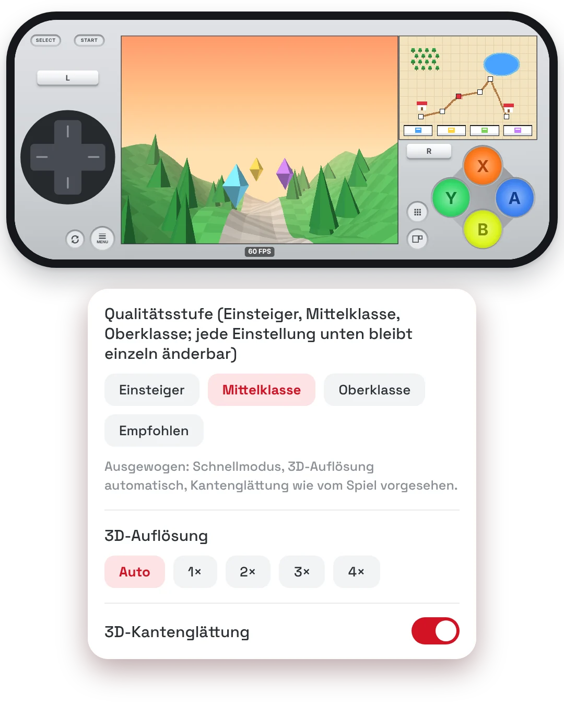
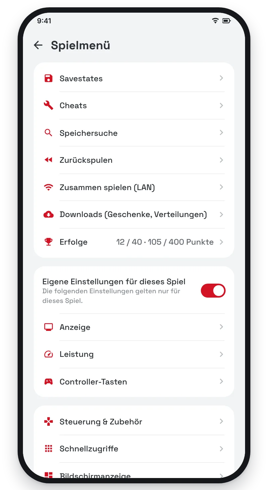
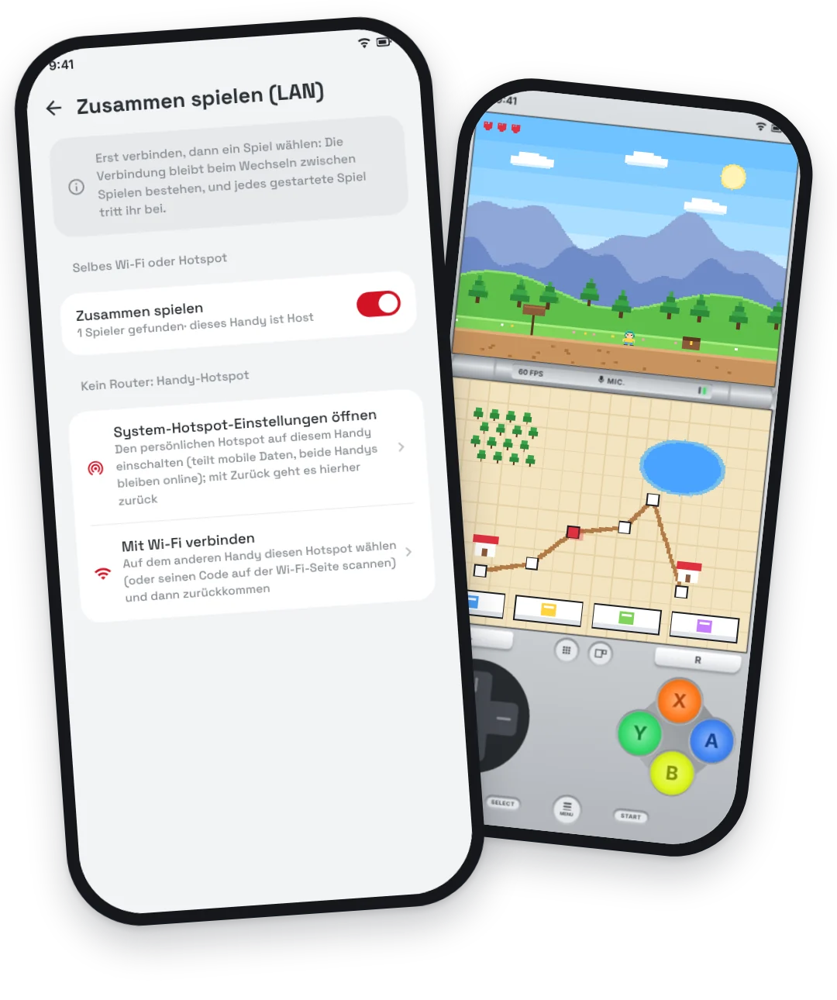
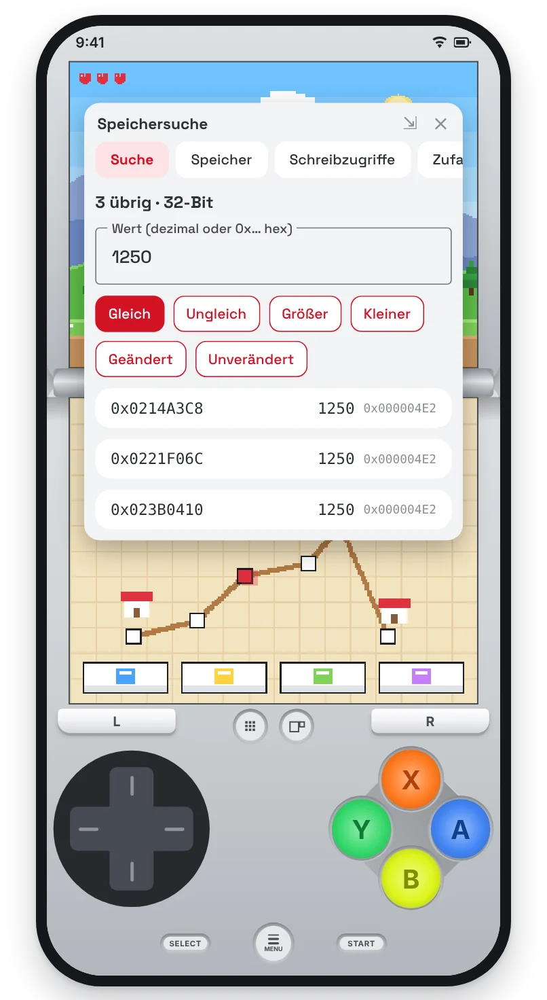
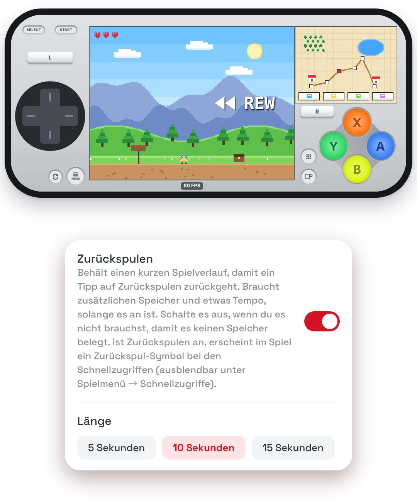

NDS-Emulator mit eigenem Präzisionskern: HD-3D, lokales Drahtlosspiel, Cheats.

Symbole und Titel aus jedem Spiel gelesen. Weiterspielen, wo du warst.

CarloDS ist ein NDS-Emulator für Android-Smartphones und -Tablets. Der Emulationskern – ARM9 und ARM7, 2D- und 3D-Grafik, Audio, Drahtlos und integriertes BIOS – ist vollständig selbst entwickelt und anhand umfangreicher Tests auf Originalhardware kalibriert. Die meisten Spiele laufen ohne BIOS-Dateien; ZIP wird unterstützt.
Übereinander, groß + klein, nebeneinander oder ein Bildschirm.

Einfach, Mittel oder High-End mit einem Tipp. 3D bis 4×.

Speicherstände, Cheats, Zurückspulen, Drahtlos, Downloads, Erfolge.

Kein Router? Ein Handy-Hotspot geht auch.

Werte in einem schwebenden Fenster suchen, während das Spiel läuft.

Ein Tipp geht 5, 10 oder 15 Sekunden zurück.
